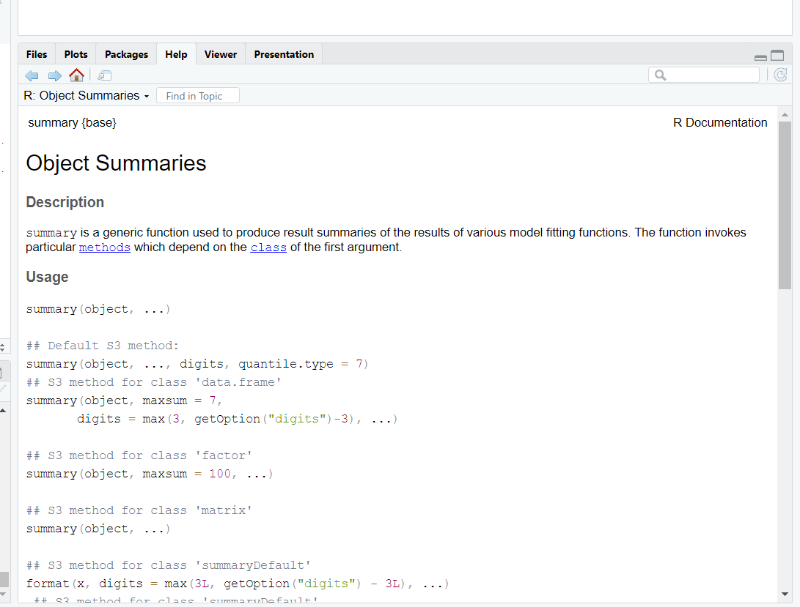
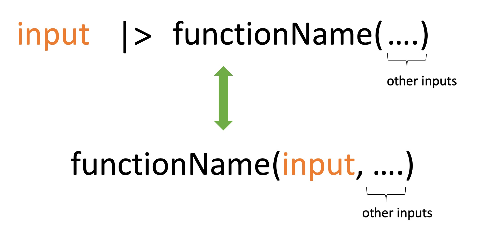

income <- c(1000, 4000, 3400, 9700, 9800)
income[1] 1000 4000 3400 9700 9800R has two main parts: data structures and functions.
income <- c(1000, 4000, 3400, 9700, 9800)
income[1] 1000 4000 3400 9700 9800mean(income)[1] 5580summary(income) Min. 1st Qu. Median Mean 3rd Qu. Max.
1000 3400 4000 5580 9700 9800 R’s basic data structures can be grouped by:
This gives us five common data structures in R:

Creating vectors
Syntax
vector_name <- c(element1, element2, element3)Example
x <- c(5, 6, 3, 1, 100)
x[1] 5 6 3 1 100Combine two vectors
p <- c(1, 2, 3)
p[1] 1 2 3q <- c(10, 20, 30)
q[1] 10 20 30r <- c(p, q)
r[1] 1 2 3 10 20 30Vector with charactor elements
countries <- c("Sri Lanka", "Afghanistan", "Bangladesh", "Bhutan", "India", "Iran", "Maldives", "Nepal", "Pakistan")
countries[1] "Sri Lanka" "Afghanistan" "Bangladesh" "Bhutan" "India"
[6] "Iran" "Maldives" "Nepal" "Pakistan" Logical vector
result <- c(TRUE, FALSE, FALSE, TRUE, FALSE)
result[1] TRUE FALSE FALSE TRUE FALSESimplifying vector creation
rep is a function in R that repeats the values in a vectorid <- 1:10
id [1] 1 2 3 4 5 6 7 8 9 10treatment <- rep(1:3, each=2)
treatment[1] 1 1 2 2 3 3Vector operations
x <- c(1, 2, 3)
y <- c(10, 20, 30)
x+y[1] 11 22 33p <- c(100, 1000)
x+pWarning in x + p: longer object length is not a multiple of shorter object
length[1] 101 1002 103Required R package to deal with data frames
library(tidyverse)── Attaching core tidyverse packages ──────────────────────── tidyverse 2.0.0 ──
✔ dplyr 1.1.4 ✔ readr 2.1.5
✔ forcats 1.0.0 ✔ stringr 1.5.1
✔ ggplot2 3.5.1 ✔ tibble 3.2.1
✔ lubridate 1.9.3 ✔ tidyr 1.3.1
✔ purrr 1.0.2
── Conflicts ────────────────────────────────────────── tidyverse_conflicts() ──
✖ dplyr::filter() masks stats::filter()
✖ dplyr::lag() masks stats::lag()
ℹ Use the conflicted package (<http://conflicted.r-lib.org/>) to force all conflicts to become errorsCreate a tibble
A tibble is an improved version of a traditional data frame in R, designed to be more user-friendly and consistent.
It is part of the tidyverse package and makes it easier to view and analyze data, especially when working with large datasets.
Lets consider the following example
GDP per capita (current US$) - South Asia
Source : https://data.worldbank.org/
Country |Most Recent Year| Most Recent Value
Afghanistan |2023| 415.7
Bangladesh |2023 |2,551.0
Bhutan| 2023| NA India |2023 |2,480.8
Maldives| 2023| 12,530.4
Nepal |2023 |1,377.6
Pakistan |2023| 1,365.3 Sri Lanka| 2023| 3,828.0
country <- c("Afghanistan", "Bangladesh", "Bhutan", "India", "Maldives",
"Nepal", "Pakistan", "Sri Lanka")
year <- c(rep(2023,8))
value <- c(415.7, 2551.0, NA, 2480.8, 12530.4, 1377.6, 1365.3, 3828.0)
final <- tibble(Country = country, Recent_Year = year, Value = value )
final# A tibble: 8 × 3
Country Recent_Year Value
<chr> <dbl> <dbl>
1 Afghanistan 2023 416.
2 Bangladesh 2023 2551
3 Bhutan 2023 NA
4 India 2023 2481.
5 Maldives 2023 12530.
6 Nepal 2023 1378.
7 Pakistan 2023 1365.
8 Sri Lanka 2023 3828 In R, functions are blocks of code that perform specific tasks.
They take input values (called arguments), process them, and return an output.
Functions help automate repetitive tasks and make code more efficient.
There are two main types of functions in R:
summary(final$Value) Min. 1st Qu. Median Mean 3rd Qu. Max. NA's
415.7 1371.5 2480.8 3507.0 3189.5 12530.4 1 - User-defined functions – Created by users for specific needs using function().final# A tibble: 8 × 3
Country Recent_Year Value
<chr> <dbl> <dbl>
1 Afghanistan 2023 416.
2 Bangladesh 2023 2551
3 Bhutan 2023 NA
4 India 2023 2481.
5 Maldives 2023 12530.
6 Nepal 2023 1378.
7 Pakistan 2023 1365.
8 Sri Lanka 2023 3828 final[1, 1]# A tibble: 1 × 1
Country
<chr>
1 Afghanistanfinal[, 1]# A tibble: 8 × 1
Country
<chr>
1 Afghanistan
2 Bangladesh
3 Bhutan
4 India
5 Maldives
6 Nepal
7 Pakistan
8 Sri Lanka final[1, ]# A tibble: 1 × 3
Country Recent_Year Value
<chr> <dbl> <dbl>
1 Afghanistan 2023 416.final$Country[1] "Afghanistan" "Bangladesh" "Bhutan" "India" "Maldives"
[6] "Nepal" "Pakistan" "Sri Lanka" To access the help file for a built-in function in R, you can use either ? or the help() function.
Running either of these commands will open the help page for the specified function.
= For example, using ?summary or help(summary) will display the help file for the summary function, which is part of the base R package.
?summary
# or
help(summary)
mean(final$Value) # Calculate the average GDP value[1] NAWhen you go to the help page for the mean() function, you’ll find that by default, the na.rm argument is set to FALSE. This means that if the data contains missing values (NA), they will be included in the calculation, and the result will also be NA. To calculate the mean while ignoring missing values, you should set na.rm = TRUE.
mean(final$Value, na.rm = TRUE) # Calculate the average GDP value[1] 3506.971|>)The pipe operator (|>) in the base R package helps improve the readability of your code.
It takes the output of one function and passes it directly into another function as an argument, making the steps in your data analysis more connected.
Instead of using nested function calls like function(first_input, other_inputs), you can write the same command in a simpler format: first_input |> function(other_inputs).

# Nested function call
mean(final$Value, na.rm = TRUE)[1] 3506.971# Using pipe operator)
final$Value |> mean(na.rm=TRUE)[1] 3506.971